VerticalDesk.
A proposed resolution before an incident is created.
By Rohith Singhu · Updated
What is VerticalDesk?
VerticalDesk is a project by Rohith Singhu, built with React, FastAPI, Python, MongoDB and RAG. An AI-assisted triage prototype for service teams: classifies a request, retrieves knowledge-base articles, drafts a cited resolution, and waits for human approval. Key result: README reports 34/34 automated tests passing.
What problem does VerticalDesk solve?
A service request needs a category, priority, relevant knowledge and a destination. Automatically turning a draft into an incident would skip a useful review step.
How does VerticalDesk work?
I connect a React interface to a FastAPI backend and MongoDB. The pipeline classifies impact and urgency, retrieves knowledge-base context, drafts a resolution and proposes routing. A person approves or rejects the proposal before the write occurs; an ordered agent trace records the steps.
The workflow.

View Mermaid diagram source
flowchart LR
A[Request] --> B[Classify]
B --> C[Retrieve knowledge]
C --> D[Draft and route]
D --> E{Human approval}
E -->|Approve| F[Create incident]
E -->|Reject| G[Discard]The diagram above is a simplified visual summary. This Mermaid source captures the branching workflow.
A closer look.

Results, with context.
README reports 34/34 automated tests passing
Approval gate before incident creation
Test count from the project README.
The source repository is private; I am happy to walk through it on request.
These results come from the project README and linked artifacts.
What I learned.
The boundary between a suggestion and a write matters. The project makes that boundary explicit with an approval gate, citations and a trace, rather than treating a plausible draft as a completed resolution.